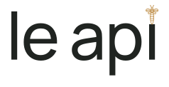

Исходный № 02
Контрольный вариант сохранён без изменений.
LE API / ДОРАБОТКА № 02
Сохраняем характер понравившегося варианта. Уточняем ритм букв и превращаем пчелу в часть i.
Контрольный вариант сохранён без изменений.

Пчела стоит на оси i; просвет сокращён. Уточнены пары le, ap и pi, сохранены мягкие формы Manrope Medium.
Компактный силуэт с выраженным корпусом. Пчела связана с буквой через ось и короткий просвет.
Тонкое продолжение корпуса соединяет пчелу и i. Более буквальная связь знака со шрифтом.

Рисунок прежней пчелы сохранён, контур усилен и приближен к i. Более деликатный вариант для крупного размера.
Моя рекомендация: нейтральные буквы, один тёплый акцент на пчеле. Фирменный зелёный 02 — для фона, навигации и отдельных деталей приложения.
В малом размере пчела воспринимается как единый акцент; тонкие детали корпуса различимы в увеличенном исполнении. Финальную минимальную величину нужно проверить на физическом экране и в печати.
Основа новой концепции: мягкая типографика, светлая нейтральная среда, зелёные акценты и пчела как часть знака. Сам логотип остаётся плоским и статичным; стекло применяется к элементам интерфейса.
Это этап согласования фирменного знака. Действующий логотип сайта и приложения пока сохранён.